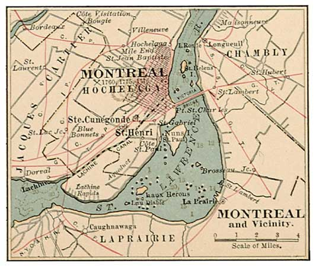
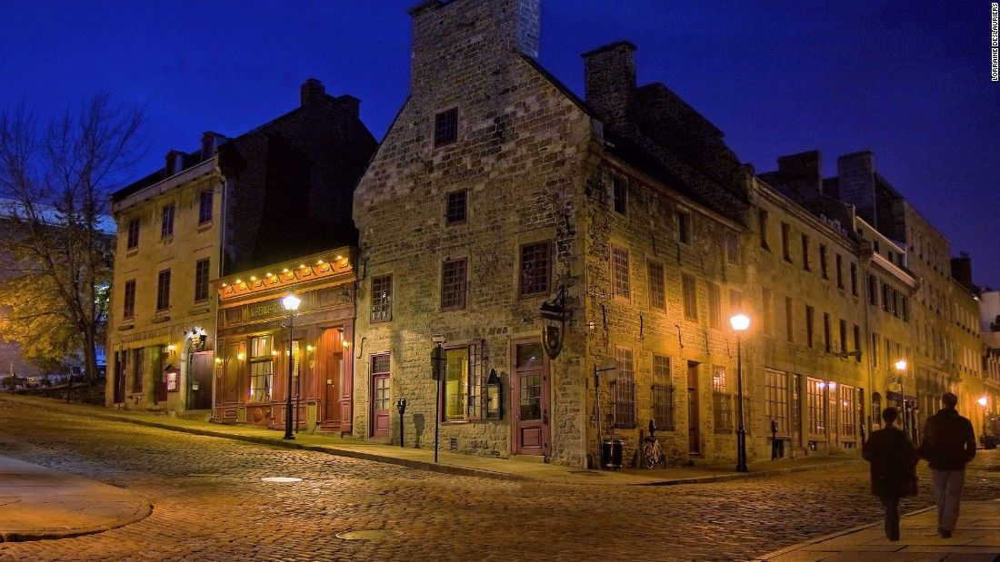
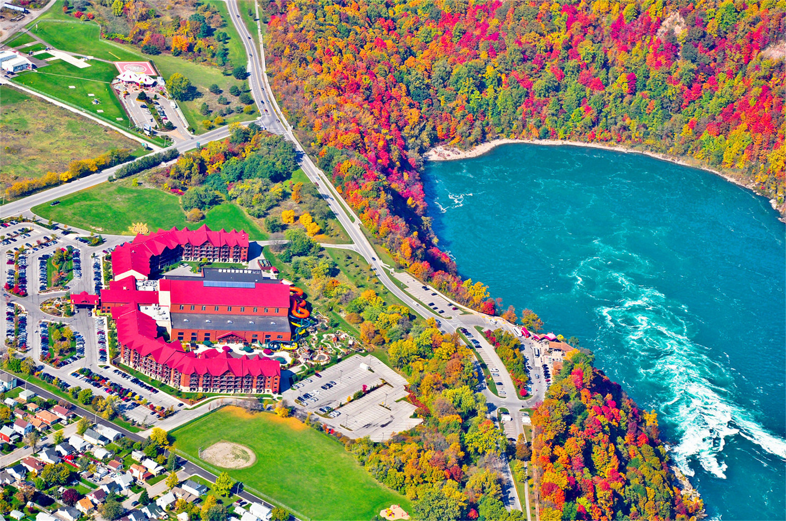

The history of Montréal, located in Québec, Canada, spans about 8,000 years. At the time of European contact, the area was inhabited by the St. Lawrence Iroquoians, a discrete and distinct group of Iroquoian-speaking indigenous people. Jacques Cartier became the first European to reach the area now known as Montréal in 1535 when he entered the village of Hochelaga on the Island of Montréal while in search of a passage to Asia during the Age of Exploration. Seventy years later, Samuel de Champlain unsuccessfully tried to create a fur trading post but the Mohawk of the Iroquois defended what they had been using as their hunting grounds.

The city definitely has a unique charm of its own, discovered when you wander through different neighborhoods.
So, if you are heading to Montréal for work or play (or even permanent relocation), here are the coolest neighborhoods absolutely worth a stroll i.e
Downtown, Vieux-montréal & Vieux-port, Plateau Mount Royal, Olympic Park and many more..
The architecture of Montréal, Québec, Canada is characterized by the juxtaposition of the old and the new and a wide variety of architectural styles, the legacy of two successive colonizations by the French, the British, and the close presence of modern architecture to the south. Much like Quebec City, the city of Montréal had fortifications, but they were destroyed between 1804 and 1817.

Montréal has it all, but where to start? Ask any local about where to find the best espresso or most authentic poutine and you'll get 10 different answers, but when it comes to the fundamentals of getting to know Montréal, several attractions and activities stand out. From the fresh air and city views of Mount Royal to late-night carousing, put these on your to-do-in-Montréal list.
Great food is undeniably the stuff of life in Montréal locals all have their favourite tried-and-true restaurants, go-to take-out dishes and an ongoing list of new eateries and cafes to try. It might take multiple return trips to decide on your own favourites, whether we're talking poutine, bagels or foie grass.